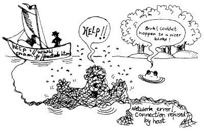

HTML has had a life-span of roughly seven years. During that time, it has evolved from a simple language with a small number of tags to a complex system of mark-up, enabling authors to create all-singing-and-dancing Web pages complete with animated images, sound and all manner of gimmicks. This chapter tells you something about the Web's early days, HTML, and about the people, companies and organizations who contributed to HTML+, HTML 2, HTML 3.2 and finally, HTML 4.
˚ ✦ . . ˚ . . ✦ ˚ . ★⋆. ࿐࿔ . ˚ * ✦ . . ✦ ˚ ˚ .˚ ✦ . . ˚ . ੈ✧̣̇˳·˖✶ ✦
Tim Berners-Lee is the inventor of the Web. In 1989, Tim was working in a computing services section of CERN when he came up with the concept; at the time he had no idea that it would be implemented on such an enormous scale. Particle physics research often involves collaboration among institutes from all over the world. Tim had the idea of enabling researchers from remote sites in the world to organize and pool together information. But far from simply making available a large number of research documents as files that could be downloaded to individual computers, he suggested that you could actually link the text in the files themselves.
Tim's prototype Web browser on the NeXT computer came out in 1990.
The fact that the Web was invented in the early 1990s was no coincidence. Developments in communications technology during that time meant that, sooner or later, something like the Web was bound to happen. For a start, hypertext was coming into vogue and being used on computers. Also, Internet users were gaining in the number of users on the system: there was an increasing audience for distributed information. Last, but not least, the new domain name system had made it much easier to address a machine on the Internet.
Open discussion about HTML across the Internet begins.
"In September 1991, the WWW-talk mailing list was started, a kind of electronic discussion group in which enthusiasts could exchange ideas and gossip."
Dave Raggett… composed HTML+, a richer version of the original HTML.
The Mosaic browser is released.
Several important browsers shaped the early development of the Web. In March 1993, Lou Montulli released version 2.0a of the Lynx browser, a text-based browser for terminals and DOS computers, and later contributed to HTML as an open standard. Around the same time, Dave Raggett began working on his Arena browser to demonstrate new HTML features. In April 1993, NCSA released Mosaic, which extended HTML by adding images, nested lists, and forms. Despite these advances, many large companies underestimated the importance of the Web, leaving much of the early innovation to individual researchers who continued development with limited resources.
HTML specification for HTML 2 is released.
The collaborative and open culture of the early Web community was often expressed not only through technical discussions, but also through humor and shared cultural artifacts. These attitudes are captured in a song known as The Net Flag, which circulated among early Internet developers:
The people's web is deepest red,
And oft it's killed our routers dead.
But ere the bugs grew ten days old,
The patches fixed the broken code.
So raise the open standard high
Within its codes we'll live or die
Though cowards flinch and Bill Gates sneers
We'll keep the net flag flying here.
Netscape is formed.
Netscape did its best to make sure that even those who were relying on a low-bandwidth connection - that is, even those who only had a modem-link from a home personal computer - were able to access the Web effectively.
HTML expanded rapidly with new tags for styling, tables, and math. Dave Raggett published HTML 3 as an Internet Draft, but it was never officially standardized. Browser vendors like Netscape and Microsoft raced ahead with features such as frames and Internet Explorer, while the HTML working group struggled to keep up. Smaller industry groups began shaping standards, including early CSS and internationalization, and the IETF HTML working group was eventually disbanded.
HTML 3.2 is ready.
the W3 Consortium formally endorsed HTML 3.2.
Success! Cougar has now fully materialized as HTML 4.0.
________
|\ __ \
\ \ \|\ \
\ \ __ \
\ \ \ \ \
\ \__\ \__\
\|__|\|__|
___ ___ ___ ________ _________ ________ ________ ___ ___
|\ \|\ \|\ \|\ ____\|\___ ___\\ __ \|\ __ \ |\ \ / /|
\ \ \\\ \ \ \ \ \___|\|___ \ \_\ \ \|\ \ \ \|\ \ \ \ \/ / /
\ \ __ \ \ \ \_____ \ \ \ \ \ \ \\\ \ \ _ _\ \ \ / /
\ \ \ \ \ \ \|____|\ \ \ \ \ \ \ \\\ \ \ \\ \| \/ / /
\ \__\ \__\ \__\____\_\ \ \ \__\ \ \_______\ \__\\ _\ __/ / /
\|__|\|__|\|__|\_________\ \|__| \|_______|\|__|\|__|\___/ /
\|_________| \|___|/
________ ________ ___ ___ _________ _____ ______ ___
|\ __ \|\ _____\ |\ \|\ \|\___ ___\\ _ \ _ \|\ \
\ \ \|\ \ \ \__/ \ \ \\\ \|___ \ \_\ \ \\\__\ \ \ \ \
\ \ \\\ \ \ __\ \ \ __ \ \ \ \ \ \ \\|__| \ \ \ \
\ \ \\\ \ \ \_| \ \ \ \ \ \ \ \ \ \ \ \ \ \ \ \____
\ \_______\ \__\ \ \__\ \__\ \ \__\ \ \__\ \ \__\ \_______\
\|_______|\|__| \|__|\|__| \|__| \|__| \|__|\|_______|